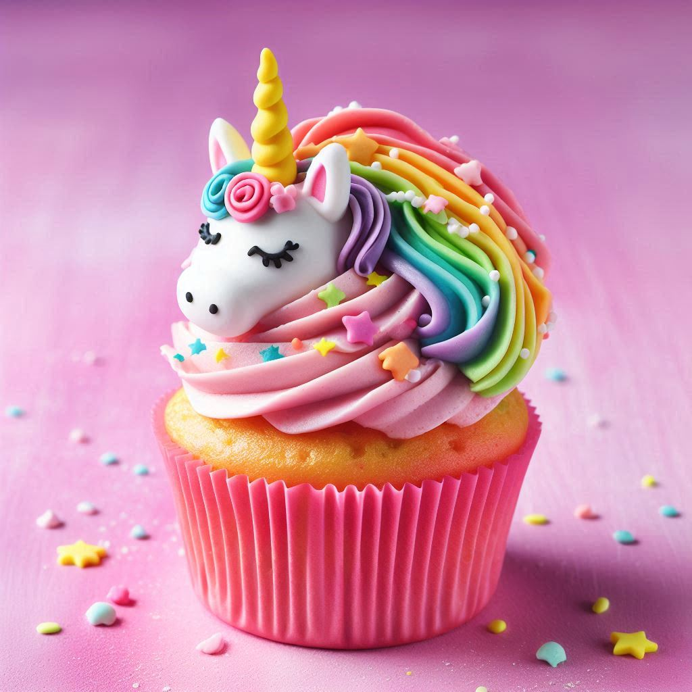
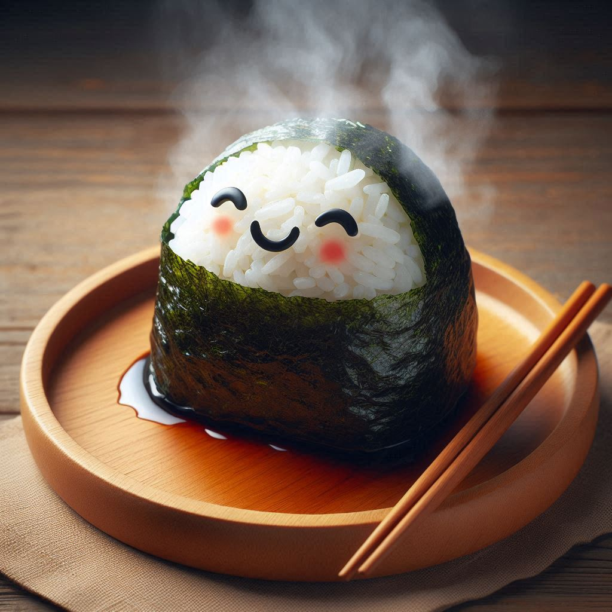

Kawaii Coffee Club üå∏‚òï
Descubre un mundo de dulzura y sabor sin gluten
¡Prepárate para una experiencia que va más allá del café!
Vive la Experiencia Kawaii
En Kawaii Coffee Club, no solo servimos café, creamos momentos mágicos. Desde nuestra decoración inspirada en lo kawaii hasta nuestros deliciosos pasteles sin gluten, cada detalle está diseñado para cautivar tus sentidos y alegrar tu día.
Nuestros Favoritos!



Encuéntranos en Nuestras Sucursales
üìç Centro: Calle Principal 123, Centro, Ciudad.
üìç Barrio Chino: Avenida Flores 456, Barrio Chino, Ciudad.
¡Únete a la Magia de Kawaii Coffee Club!
Explora nuestro mundo kawaii y libre de gluten, donde cada visita se convierte en una experiencia encantadora y memorable. ¡Te esperamos para compartir sonrisas y delicias!